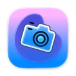
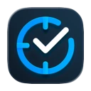
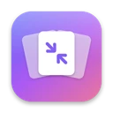

Free for Mac · Open source
Lights Out keeps your Mac unlocked for AI agents and UI automation while the screen is dark and the backlight is off. Your agents keep clicking. Your room stays dark.
macOS 14 or later · Apple Silicon · Notarized by Apple · Menu-bar app
Measured on an M4 Pro MacBook Pro driving an LG 27UP850, display sleep set to 10 minutes and “require password immediately”
Let the display sleep and macOS locks you out. Keep it awake and it lights up the room all night. Lights Out separates the two.
| Never idles into a lock | A “prevent display sleep” power assertion means macOS never starts the screen saver or the display-sleep lock, even with “require password immediately”. |
| Turns off the light | Every display's gamma table goes to black and the backlight to zero: DisplayServices for built-in and Apple displays, DDC/CI for external monitors. |
| Agents still see | Gamma is applied after the framebuffer, so screenshots and screen recordings get the real desktop. |
| Knows you from your agent | Events posted by software carry the sender's process ID; real hardware carries none. Your mouse or keyboard wakes the screen. Your agent's clicks don't. |
| Cleans up after itself | macOS restores gamma the instant the app quits, even on a crash. Backlight levels are restored on quit, or on the next launch. |
No windows, no setup. Turn it on and walk away.
Goes dark after 1 to 60 minutes without you, the way display sleep would, minus the lock.
Lights off when you leave, back on when you return. No permission needed.
Grant Accessibility and a key press brings the screen back too. Without it, the mouse and trackpad do.
If a device policy forces a screen saver on the input idle timer, Simulate Activity holds it off.
Computer-use agents, AppleScript, Accessibility automation and UI test runners need an unlocked session and a screen they can capture. They get both, and you get a dark room. Agents can drive Lights Out too.
# before a long unattended run open -g lightsout://awake/on open -g lightsout://dark # show the screen again open -g lightsout://light # also: lightsout://toggle, lightsout://awake/off
Lights Out keeps your session unlocked on purpose, so think about where you use it.
Anyone who touches the mouse gets your desktop. Use it at home or somewhere you trust, not in a shared office.
A closed MacBook with no external display sleeps no matter what. With an external display and power, it keeps going.
The backlight turns off when the monitor supports DDC/CI. Otherwise the pixels are still black, but an LCD's backlight stays on.
⌃⌘Q and Lock Screen work as usual. Lights Out only stops idle locking.
No accounts, no analytics. The only network request is the Sparkle update check.
A native Swift app that wakes every few seconds to keep the screen dark, and otherwise does nothing.
Lights Out is free software under the GPL-3.0. Read the code, report an issue, or build it yourself with Xcode.
git clone https://github.com/vunguyentuan/lightsout cd lightsout make run
Lights Out is one of a few small, native Mac apps I build. If you like how it feels, you'll probably like these too.

Turn a screen recording into a product video, filmed on real 3D devices. Your agent can edit it too, over the built-in MCP server.
smoothcapture.app →
Automatic time tracking, AI coding sessions included. Knows where your hours went without a timer, and turns them into invoices.
chronoid.app →Capture any window, combine screenshots on one canvas, annotate them and export something worth sharing.
shotshot.app →
Make images and videos up to 90% smaller with the best encoders available, without uploading a thing.
squish.madebyvu.com →